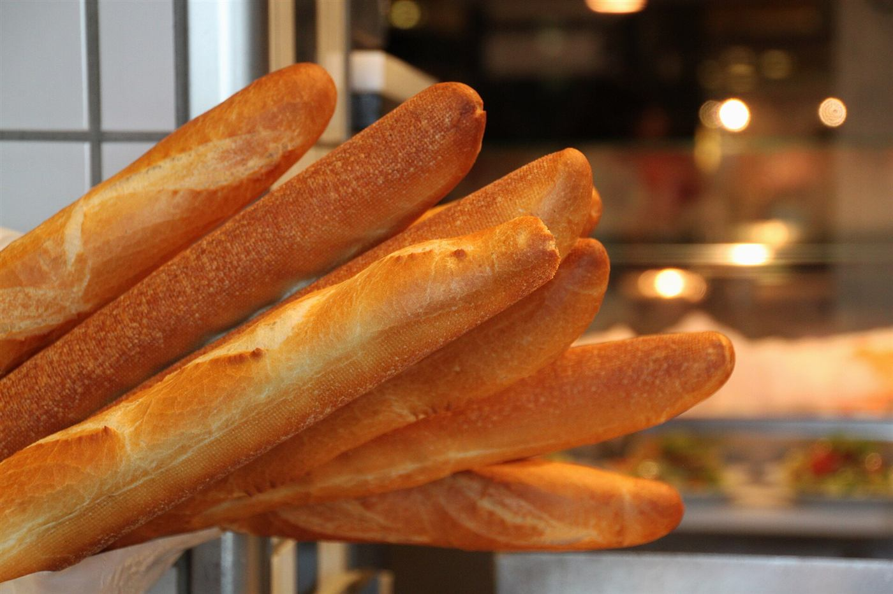
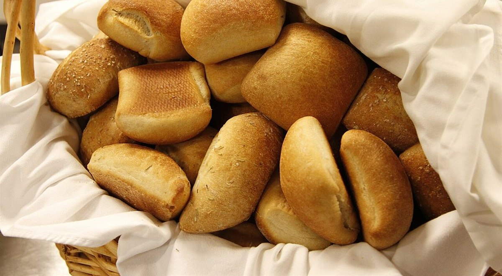
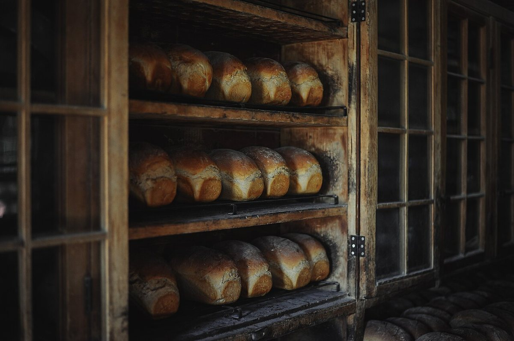

写真はイメージです。お店のものではありません。
PARTS MAP
ハエたたきの部位の配置図
上の図の番号は、ハエたたきを6つの部位に分けたものです。このテーマは制作側の連想で、お店の理念・由来とは無関係です。実際の製品の仕様を示すものでもありません。
- 1持ち手手で握る部位。すべりにくいよう、細かな溝を入れた形で描いています。
- 2吊り穴持ち手の端にあく小さな穴。フックにかけて保管するときに使う部位です。
- 3柄持ち手と打面をつなぐ、細い棒状の部位です。
- 4つなぎ部柄と、打面を囲む枠とが出会う継ぎ目の部位です。
- 5打面(メッシュ)網目状の平らな面。細かな穴が整列して並んでいます。
- 6縁(フレーム)打面をぐるりと囲む枠。面の形を保つ役目があります。